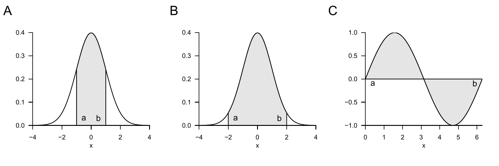
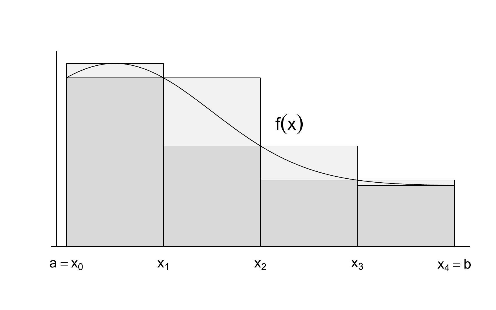
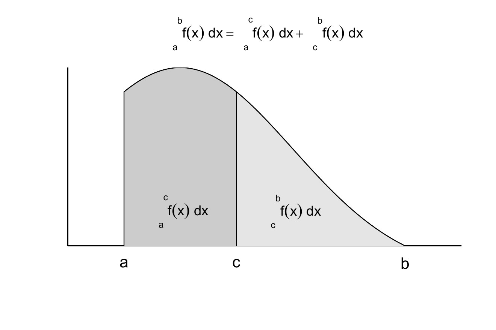
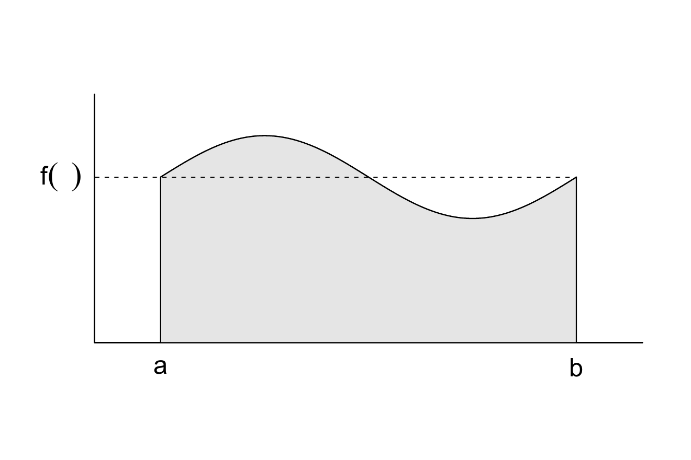
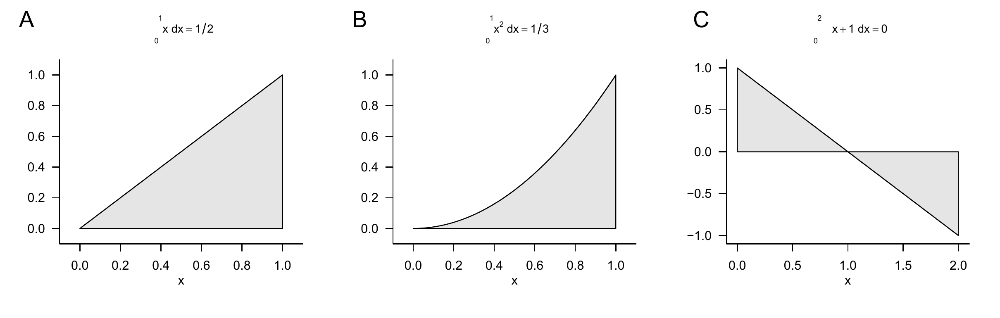

| Name | Definition | Antiderivative |
|---|---|---|
| Polynomial function | \(f(x) := \sum_{i=0}^k a_ix^i\) | \(F(x) = \sum_{i=0}^k \frac{a_i}{i+1}x^{i+1}\) |
| Constant function | \(f(x) := a\) | \(F(x) = ax\) |
| Identity function | \(f(x) := x\) | \(F(x) = \frac{1}{2}x^2\) |
| Linear-affine function | \(f(x) := ax + b\) | \(F(x) = \frac{1}{2}ax^2 + bx\) |
| Square function | \(f(x) := x^2\) | \(F(x) = \frac{1}{3}x^3\) |
| Exponential function | \(f(x) := \exp(x)\) | \(F(x) = \exp(x)\) |
| Logarithm function | \(f(x) := \ln(x)\) | \(F(x) = x \ln x - x\) |
7 Integral calculus
This chapter gives an overview of central concepts of integral calculus. The main focus throughout is on clarifying terminology, mathematical symbolism, and the intuition conveyed by it, rather than on the concrete computation of integrals.
7.1 Indefinite integrals
We begin with the definition of the indefinite integral and the concept of an antiderivative.
Definition 7.1 (Indefinite integral and antiderivative) Let \(I \subseteq \mathbb{R}\) be an interval and let \(f : I \to \mathbb{R}\) be a univariate real-valued function. Then a differentiable function \(F : I \to \mathbb{R}\) with the property \[\begin{equation} F' = f \end{equation}\] is called an antiderivative of \(f\). If \(F\) is an antiderivative of \(f\), then \[\begin{equation} \int f(x) \,dx := F + c \mbox{ with } c \in \mathbb{R} \end{equation}\] is called the indefinite integral of the function \(f\). The indefinite integral of a function thus denotes the set of all antiderivatives of a function.
The above definition states that the derivative of an antiderivative of a function \(f\) is precisely \(f\). In addition, the indefinite integral of a function \(f\) is the set of all antiderivatives of \(f\) obtained by adding different constants \(c \in \mathbb{R}\). Such a constant \(c \in \mathbb{R}\) is also called an integration constant; of course, \(\frac{d}{dx}c = 0\). The symbol \(\int f(x) \,dx\) is defined as \(F + c\). In this expression, \(f(x)\) is called the integrand. \(\int\) and \(\,dx\) have no meaning of their own; they are merely symbols.
For the elementary functions introduced in the previous sections, the antiderivatives listed in Table 7.1 result. This can be verified by differentiating the respective antiderivative with the calculation rules of differential calculus. The indefinite integrals of these elementary functions then follow directly from these antiderivatives by adding an integration constant.
The calculation rules collected in the following theorem are often helpful for determining antiderivatives of functions that are composed of functions with known antiderivatives.
Theorem 7.1 (Calculation rules for antiderivatives) Let \(f\) and \(g\) be univariate real-valued functions that possess antiderivatives, and let \(g\) be invertible. Then the following calculation rules hold for determining antiderivatives.
Sum rule \[\begin{equation} \int a f(x) + bg(x)\,dx = a\int f(x)\,dx + b\int g(x)\,dx \mbox{ for } a,b \in \mathbb{R} \end{equation}\]
Integration by parts \[\begin{equation} \int f'(x)g(x)\,dx = f(x)g(x) - \int f(x)g'(x)\,dx \end{equation}\]
Substitution rule \[\begin{equation} \int f(g(x))g'(x)\,dx = \int f(t)\,dt \mbox{ with } t = g(x) \end{equation}\]
Proof. For a proof of the sum rule, we refer to the advanced literature. The calculation rule for integration by parts follows by integrating the product rule of differentiation. Recall that \[\begin{equation} (f(x)g(x))' = f'(x)g(x) + f(x)g'(x). \end{equation}\] Integrating both sides of the equation and taking into account the sum rule for antiderivatives then yields \[\begin{align} \begin{split} \smallint (f(x)g(x))' \,dx & = \smallint f'(x)g(x) + f(x)g'(x) \,dx \\ \Leftrightarrow f(x)g(x) & = \smallint f'(x)g(x)\,dx + \smallint f(x)g'(x) \,dx \\ \Leftrightarrow \smallint f'(x)g(x)\,dx & = f(x)g(x) - \smallint f(x)g'(x) \,dx. \end{split} \end{align}\] For \(F' = f\), the substitution rule follows by applying the chain rule of differentiation to the composite function \(F(g)\). Specifically, first \[\begin{align} \begin{split} (F(g(x)))' = F'(g(x))g'(x) = f(g(x))g'(x). \end{split} \end{align}\] Integrating both sides of the equation \[\begin{equation} (F(g(x))) ' = f(g(x))g'(x) \end{equation}\] then yields \[\begin{align} \begin{split} \smallint (F(g(x)))' \,dx & = \smallint f(g(x))g'(x) \,dx \\ \Leftrightarrow F(g(x)) + c & = \smallint f(g(x))g'(x) \,dx \\ \Leftrightarrow \smallint f(g(x))g'(x) \,dx & = \smallint f(t)\,dt \mbox{ with } t := g(x). \end{split} \end{align}\] Here, the right-hand side of the last equation above is to be understood as \(F(g(x)) + c\), that is, as the antiderivative of \(f\) evaluated at the point \(t := g(x)\). The \(dt\) is not to be replaced by \(dg(x)\); it is purely notational in nature.
Indefinite integrals occupy a central place in the solution of differential equations. More immediate, however, is the use of indefinite integrals in the context of evaluating definite integrals, as introduced in the next section.
7.2 Definite integrals
Intuitively, a definite integral corresponds to the signed area between the graph of a function \(f\) and the \(x\)-axis, restricted to an interval \([a,b]\) (cf. Figure 7.1). Signed means that areas between the \(x\)-axis and positive values of \(f\) contribute positively to the area, whereas areas between the \(x\)-axis and negative values of \(f\) contribute negatively. For example, the value of the definite integral shown in Figure 7.1 A is 0.68, the value of the definite integral shown in Figure 7.1 B is 0.95 (the shaded area is clearly larger than in Figure 7.1 A), and the value of the definite integral shown in Figure 7.1 C is 0 (the shaded positive and negative areas cancel exactly). The latter example also suggests interpreting the integral as the average value of a function \(f\) over an interval \([a,b]\).

To introduce the concept of the definite integral in the sense of the Riemann integral, we first need to do some preliminary work. We begin by introducing a term for the subdivision of an interval into smaller sections.
Definition 7.2 (Partition of an interval and mesh) Let \([a,b] \subset \mathbb{R}\) be an interval and let \(x_0,x_1,x_2,...,x_n \in [a,b]\) be a set of points with \[\begin{equation} a =: x_0 < x_1 < x_2 < \cdots < x_n := b \end{equation}\] and \[\begin{equation} \Delta x_i := x_i - x_{i-1} \mbox{ for } i = 1,...,n. \end{equation}\] Then the set \[\begin{equation} Z := \{[x_0,x_1], [x_1,x_2], ..., [x_{n-1},x_n]\} \end{equation}\] of subintervals of \([a,b]\) defined by \(x_0,x_1,x_2,...,x_n\) is called a partition of \([a,b]\). Furthermore, \[\begin{equation} Z_{\mbox{max}} := \max_{i \in \mathbb{N}_n} \Delta x_i, \end{equation}\] that is, the largest of the subinterval lengths \(\Delta x_i\), is called the mesh of \(Z\).
Intuitively, \(\Delta x_i\) is the width of the rectangles in Figure 7.2, as we will see in what follows. With the concepts of the partition of an interval, we can now introduce the concept of Riemann sums.
Definition 7.3 (Riemann sums) Let \(f : [a,b] \to \mathbb{R}\) be a bounded function on \([a,b]\), that is, \(|f(x)| < c\) for \(0 < c < \infty\) and all \(x \in [a,b]\). Let \(Z\) be a partition of \([a,b]\) with subinterval lengths \(\Delta x_i\) for \(i = 1,...,n\). Furthermore, let \(\xi_{i}\) for \(i = 1,...,n\) be an arbitrary point in the subinterval \([x_{i-1}, x_{i}]\) of the partition \(Z\). Then \[\begin{equation} R(Z) := \sum_{i=1}^n f(\xi_i)\Delta x_i \end{equation}\] is called the Riemann sum of \(f\) on \([a,b]\) with respect to the partition \(Z\).
If, for example, one chooses the maximum of \(f\) in each subinterval in the Riemann sum, the so-called upper Riemann sum results, \[\begin{equation} R_o(Z) := \sum_{i=1}^n \left(\max_{[x_{i-1}, x_{i}]} f(\xi_i) \right) \cdot \Delta x_i. \end{equation}\] If, by contrast, one chooses the minimum of \(f\) in each subinterval, the so-called lower Riemann sum results, \[\begin{equation} R_u(Z) := \sum_{i=1}^n \left(\min_{[x_{i-1}, x_{i}]} f(\xi_i) \right) \cdot \Delta x_i. \end{equation}\] Figure 7.2 illustrates the definition of these Riemann sums: the dark gray rectangles each have area \(\Delta x_i \cdot \min_{[x_{i-1}, x_{i}]} f(\xi)\) and thus form the summands in the lower Riemann sum \[\begin{equation} R_u(Z) := \sum_{i=1}^4 \left(\min_{[x_{i-1}, x_{i}]} f(\xi_i) \right) \cdot \Delta x_i. \end{equation}\] The vertical combination of dark gray and light gray rectangles each has area \(\Delta x_i \cdot \max_{[x_{i-1}, x_{i}]} f(\xi)\) and thus forms the summands in the upper Riemann sum \[\begin{equation} R_o(Z) := \sum_{i=1}^4 \left(\max_{[x_{i-1}, x_{i}]} f(\xi_i) \right) \cdot \Delta x_i. \end{equation}\] Now imagine letting \(\Delta x_i\) tend to zero for all \(i = 1,...,n\), thereby making the mesh of the partition \(Z\) smaller and smaller. The values of \(\min_{[x_{i-1}, x_{i}]} f(\xi_i)\) and \(\max_{[x_{i-1}, x_{i}]} f(\xi_i)\), and hence also the values of \(R_u(Z)\) and \(R_o(Z)\), will then approach each other more and more. This limiting process is used in the definition of the Riemann integral.

Definition 7.4 (Definite riemann integral) Let \(f : [a,b] \to \mathbb{R}\) be a bounded real-valued function on \([a,b]\). Furthermore, for \(Z_k\) with \(k = 1,2,3...\), let there be a sequence of partitions of \([a,b]\) with corresponding mesh \(Z_{\mbox{max},k}\). If, for every sequence of partitions \(Z_1, Z_2,...\) with \(|Z_{\mbox{max},k}| \to 0\) as \(k \to \infty\) and for arbitrarily chosen points \(\xi_{ki}\) with \(i = 1,...,n\) in the subinterval \([x_{k,i-1}, x_{k,i}]\) of the partition \(Z_k\), the sequence of corresponding Riemann sums \(R(Z_1), R(Z_2), ...\) tends to the same limit, then \(f\) is called integrable on \([a,b]\). The corresponding limit of the sequence of Riemann sums is called the definite Riemann integral and denoted by \[\begin{equation} \int_a^b f(x)\,dx := \lim_{k \to \infty} R(Z_k) \mbox{ for } |Z_{\mbox{max},k}| \to 0. \end{equation}\] In this context, the values \(a\) and \(b\) are called the lower and upper limits of integration, respectively, \(f(x)\) is called the integrand, and \(x\) is called the variable of integration.
The Riemann integrability of a function and the value of a definite Riemann integral are thus defined in terms of a limiting process. However, the theory of Riemann integrals can be extended by the fundamental theorems of differential and integral calculus, so that the concrete computation of a definite integral rarely requires forming partitions and determining a limit. For simplicity, in what follows we omit the designation Riemann and simply speak of definite integrals.
A first step toward simplifying the computation of definite integrals is to record the following calculation rules, for whose proof we refer to the advanced literature.
Theorem 7.2 (Calculation rules for definite integrals) Let \(f\) and \(g\) be integrable functions on \([a,b]\). Then the following calculation rules hold.
Linearity. For \(c_1,c_2\in \mathbb{R}\), \[\begin{equation} \int_a^b (c_1 f(x) + c_2g(x))\,dx = c_1 \int_a^b f(x)\,dx + c_2 \int_a^b g(x)\,dx. \end{equation}\]
Additivity. For \(a < c < b\), \[\begin{equation} \int_a^b f(x)\,dx = \int_a^c f(x)\,dx + \int_c^b f(x)\,dx. \end{equation}\]
Change of sign when reversing the limits of integration \[\begin{equation} \int_a^b f(x)\,dx = - \int_b^a f(x)\,dx. \end{equation}\]
Independence from the choice of the variable of integration \[\begin{equation} \int_a^b f(x)\,dx = \int_a^b f(y)\,dy. \end{equation}\]
Independence of the integral from the type of interval \[\begin{equation} \int_{a}^{b} f(x)\,dx = \int_{]a,b[}f(x)\,dx = \int_{[a,b[}f(x)\,dx = \int_{]a,b]}f(x)\,dx = \int_{[a,b]}f(x)\,dx, \end{equation}\] where \(\int_I\) denotes the definite integral of \(f\) on the interval \(I \subseteq \mathbb{R}\).
Note that the linearity of the definite integral is analogous to associativity for sums of equal length and distributivity when multiplying by a constant (cf. Theorem 3.1), \[ \sum_{i=1}^n \left(c_1x_i + c_2y_i\right) = c_1\sum_{i=1}^n x_i + c_2\sum_{i=1}^n y_i, \] that the additivity of definite integrals is analogous to splitting sums, and that the independence of the value of an integral from the choice of the variable of integration has its counterpart in the independence of the value of a sum from its summation index. A graphical representation of the additivity calculation rule for integrals is shown in Figure 7.3. The sum of the areas given by the definite integrals \(\int_a^c f(x)\,dx\) and \(\int_c^b f(x)\,dx\) with \(a < c < b\) is the area of \(\int_a^b f(x)\,dx\).
With the help of additivity and the zero-interval integral \[\begin{equation} \int_a^a f(x)\,dx = 0 \end{equation}\] the change of sign when reversing the limits of integration, which will be important below, can be justified. To this end, as in Figure 7.3, let \[\begin{equation} \int_a^b f(x) \,dx = \int_a^c f(x) \,dx + \int_c^b f(x) \,dx. \mbox{ and } \int_b^a f(x) \,dx = \int_b^c f(x) \,dx + \int_c^a f(x) \,dx. \end{equation}\] Adding both equations gives \[\begin{align} \begin{split} \int_a^b f(x) \,dx + \int_b^a f(x) \,dx & = \int_a^c f(x) \,dx + \int_c^b f(x) \,dx + \int_b^c f(x) \,dx + \int_c^a f(x) \,dx \\\Leftrightarrow \int_a^a f(x) \,dx & = \int_a^b f(x) \,dx + \int_b^a f(x) \,dx \\\Leftrightarrow 0 & = \int_a^b f(x) \,dx + \int_b^a f(x) \,dx \\\Leftrightarrow \int_a^b f(x) \,dx & = - \int_b^a f(x) \,dx. \end{split} \end{align}\]

The fundamental theorems of differential and integral calculus finally make it possible to compute definite integrals of a function \(f\) directly with the help of the antiderivative \(F\) of \(f\). For the proof of the first fundamental theorem of differential and integral calculus, we need the mean value theorem of integral calculus, which we state here without proof and illustrate in Figure 7.4.
Theorem 7.3 (Mean value theorem of integral calculus) For a continuous function \(f : [a,b] \to \mathbb{R}\), there exists a \(\xi \in ]a,b[\) such that \[\begin{equation} \int_a^b f(x)\,dx = f(\xi)(b-a) \end{equation}\]
The mean value theorem of integral calculus guarantees the existence of a \(\xi \in [a,b]\) such that the definite integral \(\int_a^b f(x)\,dx\) equals the product of the “rectangle height” \(f(\xi)\) and the “rectangle width” \((b-a)\). In Figure 7.4, this \(\xi\) lies exactly halfway between \(a\) and \(b\). That the resulting gray rectangle area equals \(\int_a^b f(x)\,dx\) follows from the visually at least plausible fact that the areas between \(f(x)\) and \(f(\xi)\) on the interval \([a,\xi]\) and between \(f(\xi)\) and \(f(x)\) on the interval \([\xi,b]\) have the same magnitude, but the former has a negative sign. In general, however, the mean value theorem of integral calculus only guarantees the existence of a \(\xi \in [a,b]\) with the discussed property; it does not provide a formula for determining \(\xi\).

With this preliminary work, we can now formulate and prove the first fundamental theorem of differential and integral calculus.
Theorem 7.4 (First fundamental theorem of calculus) If \(f : I \to \mathbb{R}\) is a continuous function on the interval \(I \subset \mathbb{R}\), then the function \[\begin{equation} F : I \to \mathbb{R}, x \mapsto F(x) := \int_a^x f(t)\,dt \mbox{ with } x, a \in I \end{equation}\] is an antiderivative of \(f\).
Proof. We consider the difference quotient \[\begin{equation} \frac{1}{h}(F(x+h) - F(x)) \end{equation}\] With the definition \(F(x) := \smallint_a^x f(t)\,dt\) and the additivity of the definite integral, it follows that \[\begin{equation} \frac{1}{h}(F(x+h) - F(x)) = \frac{1}{h}\left(\int_a^{x + h} f(t)\,dt - \int_a^{x} f(t)\,dt\right) = \frac{1}{h} \int_x^{x + h}f(t)\,dt \end{equation}\] By the mean value theorem of integral calculus, there is therefore a \(\xi \in ]x,x+h[\) such that \[\begin{equation} \frac{1}{h}(F(x+h) - F(x)) = f(\xi) \end{equation}\] Taking the limit then yields \[\begin{equation} \lim_{h \to 0}\frac{1}{h}(F(x+h) - F(x)) = \lim_{h \to 0} f(\xi) \mbox{ for } \xi \in ]x, x + h[ \Leftrightarrow F'(x) = f(x). \end{equation}\]
The second fundamental theorem of differential and integral calculus states how to compute a definite integral with the help of the antiderivative.
Theorem 7.5 (Second fundamental theorem of calculus) If \(F\) is an antiderivative of a continuous function \(f : I \to \mathbb{R}\) on an interval \(I\), then, for \(a,b \in I\) with \(a \le b\), \[\begin{equation} \int_a^b f(x)\,dx = F(b) - F(a) =: F(x)\vert_a^b. \end{equation}\]
Proof. Using the calculation rules for definite integrals and the first fundamental theorem of differential and integral calculus, we obtain \[\begin{equation} F(b) - F(a) = \int_\alpha^b f(t)\,dt - \int_\alpha^a f(t)\,dt = \int_a^\alpha f(t)\,dt + \int_\alpha^b f(t)\,dt = \int_a^b f(x)\,dx. \end{equation}\]
We want to apply the second fundamental theorem of differential and integral calculus in three examples (cf. Figure 7.5).

Example (1)
We consider the identity function \[\begin{equation} f : \mathbb{R} \to \mathbb{R}, x \mapsto f(x) := x \end{equation}\] and want to compute the definite integral of this function on the interval \([0,1]\), that is, \[\begin{equation} \int_0^1 f(x)\,dx = \int_0^1 x \,dx. \end{equation}\] To do so, recall that an antiderivative of \(f\) is given by \[\begin{equation} F : \mathbb{R} \to \mathbb{R}, x \mapsto F(x) := \frac{1}{2}x^2 \end{equation}\] because \[\begin{equation} F'(x) = \frac{d}{dx}\left(\frac{1}{2}x^2 \right) = 2 \cdot \frac{1}{2} x^{2-1} = x. \end{equation}\] Substitution into the second fundamental theorem of differential and integral calculus then gives \[\begin{equation} \int_0^1 x \,dx =\frac{1}{2}1^2 - \frac{1}{2}0^2 = \frac{1}{2}. \end{equation}\] This result agrees with the intuition suggested by the gray area in Figure 7.5 A.
Example (2)
Next, we consider the square function \[\begin{equation} f : \mathbb{R} \to \mathbb{R}, x \mapsto f(x) := x^2 \end{equation}\] and want to compute the definite integral of this function on the interval \([0,1]\), that is, \[\begin{equation} \int_0^1 f(x)\,dx = \int_0^1 x^2 \,dx. \end{equation}\] To do so, recall that an antiderivative of \(f\) is given by \[\begin{equation} F : \mathbb{R} \to \mathbb{R}, x \mapsto F(x) := \frac{1}{3}x^3 \end{equation}\] because \[\begin{equation} F'(x) = \frac{d}{dx}\left(\frac{1}{3}x^3 \right) = 3 \cdot \frac{1}{3} x^{3-1} = x^2. \end{equation}\] Substitution into the second fundamental theorem of differential and integral calculus then gives \[\begin{equation} \int_0^1 x^2 \,dx =\frac{1}{3}1^3 - \frac{1}{3}0^3 = \frac{1}{3}. \end{equation}\] This result agrees with the intuition that follows from comparing the gray areas in Figure 7.5 A and Figure 7.5 B.
Example (3)
Finally, we consider the linear-affine function \[\begin{equation} f : \mathbb{R} \to \mathbb{R}, x \mapsto f(x) := -x + 1 \end{equation}\] and want to compute the definite integral of this function on the interval \([0,2]\), that is, \[\begin{equation} \int_0^2 f(x)\,dx = \int_0^2 -x + 1 \,dx. \end{equation}\] To do so, recall that an antiderivative of the linear function with \(a = -1\) and \(b = 1\) (cf. Table 7.1) is given by \[\begin{equation} F : \mathbb{R} \to \mathbb{R}, x \mapsto F(x) := -\frac{1}{2}x^2 + x \end{equation}\] because \[\begin{equation} F'(x) = \frac{d}{dx}\left(-\frac{1}{2}x^2 + x \right) = - 2 \cdot \frac{1}{2} x^{2-1} + 1 \cdot x^{1-1} = -x + 1. \end{equation}\] Substitution into the second fundamental theorem of differential and integral calculus then gives \[\begin{equation} \int_0^2 -x + 1 \,dx = \left(-\frac{1}{2}2^2 + 2 \right) - \left(-\frac{1}{2}0^2 + 0 \right) = -2 + 2 - 0 = 0. \end{equation}\] This result agrees with the intuition that the positive and negative gray areas in Figure 7.5 C cancel each other.
7.3 Improper integrals
Improper integrals are definite integrals in which at least one limit of integration is not a real number, but rather \(-\infty\) or \(\infty\). We illuminate the nature of improper integrals with the following definition and an example.
Definition 7.5 (Improper integrals) Let \(f : \mathbb{R} \to \mathbb{R}\) be a univariate real-valued function. With the definitions \[\begin{equation} \int_{-\infty}^b f(x)\,dx := \lim_{a \to -\infty} \int_a^b f(x)\,dx \mbox{ and } \int_a^\infty f(x)\,dx := \lim_{b \to \infty} \int_a^b f(x)\,dx \end{equation}\] and the additivity of integrals \[\begin{equation} \int_{-\infty}^\infty f(x)\,dx = \int_{-\infty}^b f(x)\,dx + \int_b^{\infty}f(x)\,dx \end{equation}\] the concept of the definite integral is extended to the unbounded intervals of integration \(]-\infty,b]\), \([a,\infty[\), and \(]-\infty,\infty[\). Integrals with unbounded intervals of integration are called improper integrals. If the corresponding limits exist, one says that the improper integrals converge.
As an example, we consider the improper integral of the function \[\begin{equation} f : \mathbb{R} \to \mathbb{R}, x \mapsto f(x) := \frac{1}{x^2} \end{equation}\] on the interval \([1, \infty[\), that is, \[\begin{equation} \int_1^{\infty} \frac{1}{x^2}\,dx. \end{equation}\] According to the conventions in the definition of improper integrals, \[\begin{equation} \int_1^{\infty} \frac{1}{x^2}\,dx = \lim_{b \to \infty} \int_1^b \frac{1}{x^2}\,dx. \end{equation}\] With the antiderivative \(F(x) = -x^{-1}\) of \(f(x) = x^{-2}\), the definite integral in the above equation becomes \[\begin{equation} \int_1^b \frac{1}{x^2}\,dx = F(b) - F(1) = -\frac{1}{b} - \left(-\frac{1}{1}\right) = -\frac{1}{b} + 1. \end{equation}\] Thus, \[\begin{equation} \int_1^{\infty} \frac{1}{x^2}\,dx = \lim_{b \to \infty} \int_1^b \frac{1}{x^2}\,dx = \lim_{b \to \infty}\left(-\frac{1}{b} + 1\right) = - \lim_{b \to \infty}\frac{1}{b} + \lim_{b \to \infty} 1 = 0 + 1 = 1. \end{equation}\]
7.4 Multidimensional integrals
So far, we have only considered integrals of univariate real-valued functions. The concept of the integral can also be extended to multivariate real-valued functions. In that case, however, the integration domain of the function is not necessarily as easy to describe as an interval. In particular, arbitrarily shaped integration domains are already possible for bivariate functions, for example. Here, we now want to consider the simplest case of a hyperrectangle. In this case, we can define multidimensional definite integrals as follows.
Definition 7.6 (Multidimensional definite integrals on hyperrectangles) Let \(f : \mathbb{R}^n \to \mathbb{R}\) be a multivariate real-valued function. Then integrals of the form \[\begin{equation} \int\limits_{[a_1,b_1]\times \cdots \times [a_n,b_n]} f(x)\,dx = \int_{a_1}^{b_1} \cdots \int_{a_n}^{b_n} f(x_1,...,x_n)\,dx_1...\,dx_n \end{equation}\] are called multidimensional definite integrals on hyperrectangles. Furthermore, integrals of the form \[\begin{equation} \int_{\mathbb{R}^n} f(x)\,dx = \int_{-\infty}^{\infty} \cdots \int_{-\infty}^{\infty} f(x_1,...,x_n)\,dx_1...\,dx_n \end{equation}\] are called multidimensional improper integrals.
As an example of Definition 7.6, we consider the two-dimensional definite integral of the function \[\begin{equation} f: \mathbb{R}^2 \to \mathbb{R}, (x_1,x_2) \mapsto f(x_1,x_2) := x_1^2 + 4x_2 \end{equation}\] on the rectangle \([0,1] \times [0,1]\). Fubini’s theorem from the theory of multidimensional integrals states that multidimensional integrals can be evaluated in any coordinate order. Thus, for example, \[\begin{equation} \int_{a_1}^{b_1} \left(\int_{a_2}^{b_2} f(x_1,x_2)\,dx_2\right) \,dx_1 = \int_{a_2}^{b_2} \left(\int_{a_1}^{b_1} f(x_1,x_2)\,dx_1 \right) \,dx_2. \end{equation}\] In this sense, for the example we consider \[\begin{equation} \int_0^1 \int_0^1 x_1^2 + 4x_2 \,dx_1\,dx_2 = \int_0^1 \left(\int_0^1 x_1^2 + 4x_2 \,dx_1\right)\,dx_2 \end{equation}\] and therefore first the inner integral. Here, \(x_2\) takes on the role of a constant. An antiderivative of \(g(x_1) := x_1^2 + 4 x_2\) is \(G(x_1) = \frac{1}{3}x_1^3 + 4x_2x_1\), which can be verified by differentiating \(G\). Thus, for the inner integral, \[\begin{align} \begin{split} \int_0^1 x_1^2 + 4x_2 \,dx_1 & = G(1) - G(0) \\ & = \frac{1}{3}\cdot 1^3 + 4x_2\cdot 1 - \frac{1}{3}\cdot 0^3 - 4x_2\cdot 0 \\ & = \frac{1}{3} + 4x_2. \end{split} \end{align}\] Considering the outer integral \[ \int_0^1 4x_2 + \frac{1}{3} \,dx_2 \] then gives, with the antiderivative \[\begin{equation} H(x_2) = 2x_2^2 + \frac{1}{3}x_2 \end{equation}\] of \[\begin{equation} h(x_2) := 4x_2 + \frac{1}{3}, \end{equation}\] that \[\begin{align} \begin{split} \int_0^1 \int_0^1 x_1^2 + 4x_2 \,dx_1\,dx_2 & = \int_0^1 4x_2 + \frac{1}{3} \,dx_2 \\ & = H(1) - H(0) \\ & = 2\cdot 1^2 + \frac{1}{3}\cdot 1 - 2\cdot 0^2 - \frac{1}{3}\cdot 0 \\ & = \frac{7}{3}. \end{split} \end{align}\]